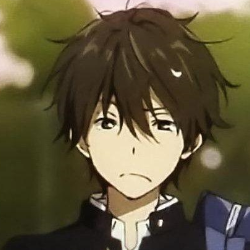
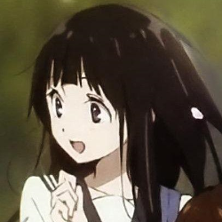
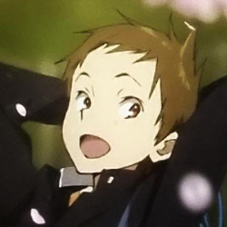
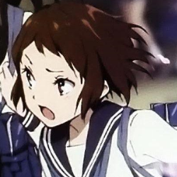
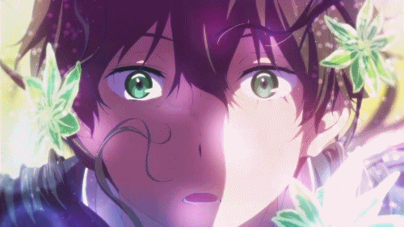
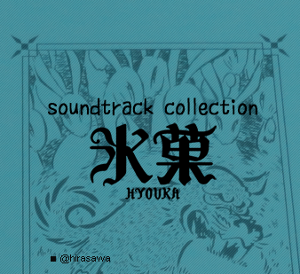

Sobre a obra:
Hyouka(氷菓) é uma série de livros de mistério escrita por Honobu Yonezawa, além de ser o primeiro volume da série Clube de Literatura Clássica (古典部 Koten-bu?). Uma adaptação em mangá foi feita por Task Ohna, a qual começou a ser publicada em março de 2012 pela revista Shōnen Ace da Kadokawa Shoten. Um anime de 22 episódios foi produzido pela Kyoto Animation e dirigido por Yasuhiro Takemoto, indo ao ar entre 22 de abril e 16 de setembro de 2012(Fonte: Wikipédia).
História:
A pedido de sua irmã mais velha, o estudante Hōtarō " Houtarou " Oreki se junta ao Clube de Literatura Clássica, para impedí-lo de ser fechado, junto com Eru Chitanda, Satoshi Fukube e Mayaka Ibara. Nele, Oreki e os demais membros começam a investigar um caso que ocorreu há 45 anos, o qual envolve o tio de Chitanda. As dicas deste mistério se encontram em uma obra intitulada Hyōka, feita através de dados coletados pelo antigo Clube de Literatura Clássica. Assim, o grupo de amigos passa a resolver casos misteriosos que ocorrem dentro e fora da escola(Fonte: Wikipédia).
Personagens:
Houtarou Oreki
Um garoto pouquíssimo energético que se junta ao Clube de Literatura Clássica a pedido de sua irmã mais velha, Tomoe Oreki, para impedir que suas atividades sejam encerradas. Ele diz que não gosta de desperdiçar energia, mas caso lhe dêem um mistério para ser analisado, consegue deduções lógicas e brilhantes sobre ele. Para Oreki, Eru é alguém que ele não consegue ignorar, tanto que, por insistência da garota, começa a se enturmar com os colegas de classe e passa a participar das atividades(Fonte: Wikipédia).
Eru Chitanda
Uma garota educada e gentil, filha de uma família rica de fazendeiros, que se junta ao Clube de Literatura Clássica. Embora sempre consiga notas altas nos testes da escola, ela geralmente depende das habilidades de raciocínio de Oreki para solucionar os mistérios que aparecem ao decorrer da série(Fonte: Wikipédia).
Satoshi Fukube
Um amigo de Oreki que se junta ao Clube de Literatura Clássica. Ele possui uma memória impressionante, referindo-se a ela como um banco de dados humano. Embora Satoshi sempre fale para Oreki curtir mais a vida, no final, é revelado que ele, secretamente, tem inveja dele, devido as suas habilidades de raciocínio. Ele chama Mayaka Ibara por seu primeiro nome, o que indica que os dois são bastante próximos. Mais tarde, Satoshi revela que é apaixonado por Mayaka, mas não quer ficar "obcecado" por ela. Ele começa a namorar Mayaka na primavera de seu segundo ano(Fonte: Wikipédia).
Mayaka Ibara
A última pessoa a se juntar ao Clube de Literatura Clássica. Mayaka não se dá bem com Oreki, porém o relacionamento dos dois melhorou depois dela se tornar amiga de Chitanda. Ela adora desenhar mangás, tanto que também é membro do Clube de Mangá da escola. Ela sempre foi apaixonada por Satoshi, o qual sempre encarou esse fato de maneira fria. Ela chama Satoshi de Fuku-chan(Fonte: Wikipédia).
Animação
A adaptação em anime é composta por 22 episódios, os quais mostram as histórias presentes nos primeiros quatro volumes da light novel(livro). Ele foi dirigido por Yasuhiro Takemoto e produzido pela Kyoto Animation, indo ao ar no Japão entre 22 de abril e 16 de setembro de 2012.Um episódio bônus foi transmitido online pela UStream em 8 de julho de 2012 e foi lançado mais tarde em Blu-ray Disc junto com o terceiro volume do mangá(quadrinhos), em 12 de janeiro de 2013.O primeiro episódio foi apresentado no dia 14 de abril, durante um evento especial no Kadowaka Cinema em Shinjuku(Fonte: Wikipédia).
Musica
A trilha sonora original da animação foi composta por Kohei Tanaka(田中 公平) e foi lançada como "Hyouka Special CD" junto dos volumes do Blu-ray da animação, a seguir uma das faixas(Air):
